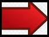
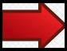

¿Qué es una Nintendo Switch?
Es una consola de videojuegos desarrollada por Nintendo. Conocida en el
desarrollo por su nombre código «NX», se dio a conocer en octubre
de 2016 y fue lanzada mundialmente el 3 de marzo de 2017.
(Offizielle Nintendo Deutschland-Seite,2017)
La Switch utiliza dos controladores inalámbricos llamados en conjunto Joy-Con,
que incluyen cuatro botones de acción estándar y un joystick direccional,
así como sensores para la detección de movimiento y retroalimentación
táctil de alta definición, aunque se diferencian en algunos botones y
características adicionales. Dos Joy-Con pueden conectarse uno a cada
lado de la consola para usarse como consola portátil, conectarse al
accesorio Grip proporcionado junto a la consola para usarlos como un
mando más tradicional o ser utilizados individualmente en la mano
como el mando wii
y de esta forma usarse con juegos multijugador
locales. También puede utilizar ciertos controles inalámbricos y/o
alámbricos que no incluye la consola, adoptado como Pro Controller,
que incluyen las mismas características que los mandos tradicionales a
excepción de que este incluye detección NFC para Amiibo y vibración HD.
(Offizielle Nintendo Deutschland-Seite,2017)
Características
| Tipo | Videoconsola híbrida |
|---|---|
| Generación | Octava |
| Código | Nintendo NX |
| Desarrollador | Nintendo |
| Fabricante | Nintendo Platform Technology Development |
| Procesador | SoC Nvidia Tegra |
Historia
La consola fue anunciada el 17 de marzo de 2015 en una
conferencia de prensa para anunciar una colaboración
entre Nintendo y DeNA. El 27 de abril de 2016, Nintendo anunció
su intención de lanzarla en marzo de 2017, pero también se
informó que la consola no sería mostrada en el E3 2016, siendo
presentada más tarde en ese mismo año. Tiempo después se anunció
que Just Dance 2017 también será lanzado en esta consola y Nintendo
también informó que no sería mostrada en el Tokyo Game Show de
septiembre de 2016. El 23 de julio de 2016, Sega anunció el
lanzamiento de su nuevo juego Sonic Forces (anteriormente
conocido por su nombre en clave Project Sonic 2017) para
Nintendo Switch, aún con nombre NX, a finales de 2016.(Offizielle Nintendo Deutschland-Seite,2017)
El 20 de septiembre de 2016, el director ejecutivo
de The Pokémon Company, Tsunekazu Ishihara, mencionó
que NX cambiaría el concepto de las consolas de sobremesa
y las consolas portátiles. Esta declaración confirma
la posibilidad de que sea una consola híbrida.
(Wikipedia,2015).
El 22 de septiembre de 2016, el director ejecutivo de Ubisoft,
Yves Guillemot, declaró que "La nueva consola de Nintendo es
una máquina fantástica. Es un nuevo modo de acercarse a los
juegos, es muy Nintendo, que nos ofrece algo nuevo una vez
más. Nos encanta NX".
(Wikipedia,2015).
El 20 de octubre de 2016, mediante un video de algo
más de tres minutos, la consola fue presentada bajo
el nombre comercial de Nintendo Switch. El elemento
más destacado es la naturaleza híbrida del nuevo hardware
que puede usarse como consola portátil o como consola de
sobremesa. Para ello dispone de controles desmontables que
reciben el nombre de Joy-Con.
(Wikipedia,2015).
El 13 de enero de 2017, se celebró en Tokio la
presentación oficial de la consola, acompañada
de eventos en los que los periodistas pudieron
probar la consola. Durante la presentación de la
misma se presentaron las diferentes funciones de
los Joy-Con, las funciones en línea, las configuraciones
de venta, la duración de la batería y la capacidad de
almacenamiento así como sus primeros videojuegos: 1-2-Switch,
Arms, Mario Kart 8 Deluxe y Splatoon 2, entre otros.
(Wikipedia,2015).
Consola y base
Nintendo describe que con la consola y la base hay tres métodos
de jugabilidad que se pueden utilizar con la Switch; el modo
TV con la consola dentro de la base para jugar con un televisor
grande, el modo sobremesa con la consola apoyada sobre una
superficie con su apoyo para jugar lejos de una pantalla, o
en modo portátil como una portátil táctil tradicional. (Offizielle Nintendo Deutschland-Seite,2017)
Los jugadores pueden intercambiar entre estos modos colocando o sacando la consola de la base, sacando o escondiendo el apoyo o extrayendo o conectando los Joy-Con. Nintendo ha dicho que la Switch es una "experiencia de un jugador", en que el jugador verá el contenido de la consola cuando está fuera de la base, o en la pantalla enganchada en la base cuando la consola está dentro. La Switch no incluirá función de dos pantallas como el que tenía la Wii U y su GamePad.
Consola
La unidad principal de la Switch es la consola, una portátil que funciona con batería y cuenta con una pantalla LCD de 6,2 pulgadas (15,75 cm). El módulo de tableta mide 23,9 x 10,2 x 1,4 cm y pesa 297 g. La pantalla tiene una capacidad multitáctil de diez puntos e incluye tecnología háptica de la mano de Immersion Corporation. La pantalla LCD es compatible con resoluciones de hasta 720p (1280 × 720 px). La consola incluye un conector de audio de 3,5 mm, altavoces estéreo en la parte inferior de la consola, un puerto USB tipo C para cargar mientras está fuera de la base, y un soporte desplegable en la parte trasera. La consola también incluye ranuras para tarjetas de juego similares a cartuchos, y otra para tarjetas micro-SDXC. La consola tiene un riel a cada lado en los que se pueden deslizar los Joy-Con, los cuales además incluyen un seguro para que no se puedan retirar. Un sensor de luz en el frontal de la consola se utiliza para la regulación automática del brillo de la pantalla. La consola también se puede conectar a la base para alcanzar una resolución 1080p (1920 × 1080 píxeles) en televisores. (Offizielle Nintendo Deutschland-Seite,2017)
Joy-Con
Los controles Joy-Con son los principales mandos para el Nintendo Switch. Con dos variaciones izquierda y derecha, los mandos se acoplan a los lados de la pantalla del Switch o al Joy-Con Grip. Cada uno de ellos incluye controles giroscópicos/de movimiento como el Wii Remote, y Vibración HD.El joycon con un signo de sumar (➕) es el derecho y el otro con signo de restar (➖) es el izquierdo. Para conectar los joycons a la consola se debe deslizarlos por lo lados de la pantalla lo cual genera un sonido 'click' a volumen alto y una linea de color aparece en donde se acopló el joy-con. tenerlo conectado a la consola también carga las baterías internas de cada joycon, una alternativa es el uso del "Joy-Con Charging Grip". En Nintendo Switch Lite es imposible ver la linea de color o escuchar el click, pero si es posible agregar mas joycons ó mandos Pro de forma inalámbrica. (Offizielle Nintendo Deutschland-Seite,2017)

Índice
Presentación
>Página principal:
1.Juegos
2.Accesorios
3.Tipos de Nintendo Switch
Fuentes Bibliográficas

 

Melodía de Nintendo